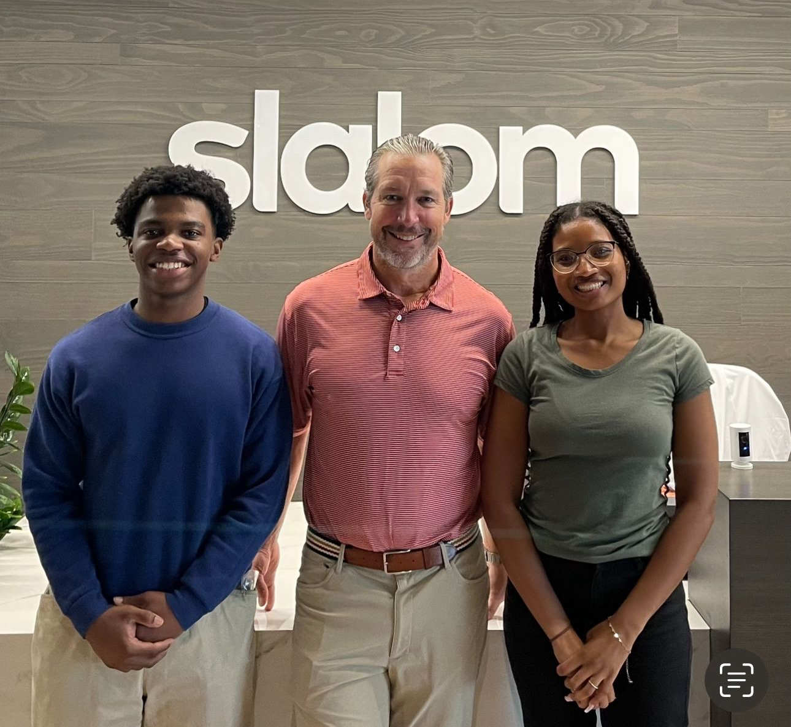
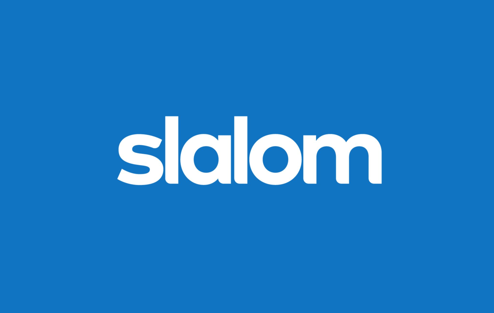

IT Consulting Intern
Houston, TX
May – June 2024
During my internship at Slalom’s Houston office, I worked closely with the IT consulting team to support a major oil and gas client. My primary focus was on transforming large-scale user feedback into meaningful insights using AI and data visualization tools.
I developed Power BI dashboards that synthesized over 10,000 pieces of user input, helping guide strategic improvements to a new operational tool. Using Power Query and DAX, I was able to surface hidden trends and relationships within the data, which enhanced our reporting efficiency and decision-making clarity.
Alongside my technical work, I participated in proposal development, business process analysis, and leadership workshops to further strengthen my consulting skill set.
This opportunity was made possible through CareerSpring’s FORWARD program, which connects underrepresented students with high-impact internships. It allowed me to experience real-world client engagement while growing my confidence in both data and consulting.
This experience deepened my interest in using data science and AI to solve real business problems. It gave me hands-on exposure to consulting work in a fast-paced, collaborative setting and helped reinforce my passion for creating solutions that drive tangible impact.

